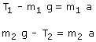
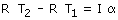
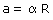
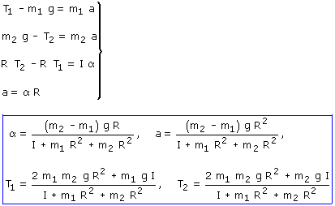
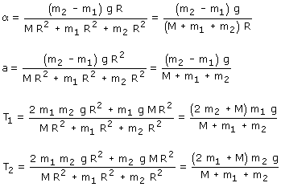

La polea comenzará a girar en el sentido de las agujas del reloj
 |
Traslación de los bloques:  Rotación de la polea:  Relación entre traslación y rotación:  |
Combinando las tres expresiones resulta un sistema con tres incógnitas: T, a, α

Sustituyendo el momento de inercia

Observa que si la masa de la polea es cero las tensiones en los extremos de la cuerda, durante el movimiento, son iguales